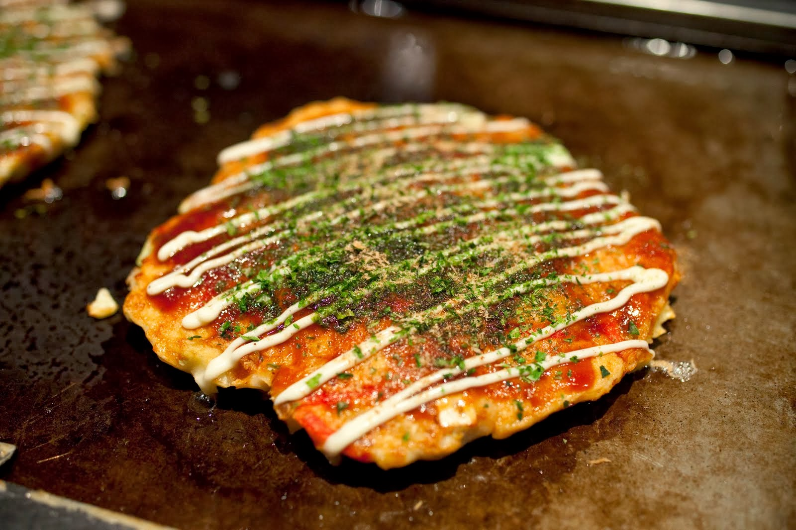

Okonomiyaki
Ingredients
| Main ingredients | Toppings |
|---|---|
| 1 egg | 2-4 tablespoons mayonnaise |
| 60g plain flour | 1 green nori sheet(seaweed), shredded |
| 1 tablespoon boullion powder | 3 spring onions, finely sliced |
| 200g green cabbage, finely shredded | katsuobushi (bonito flakes, optional) |
| 1 1/2 tablespoon worcestershire sauce | |
| 1 tablespoon vegetable oil | |
| 100g cooked pork belly, thinly sliced into bite sized piceces | |
| 1 1/2 tablespoon ketchup | |
| 1/2 tablespoon caster sugar |
Method
step 1 Crack the egg into a large bowl and tip in the flour, bouillon powder and 100ml water. mix well. stir in the shredded cabbage and season well.
step 2 Heat the oil in a small, deep frying pan or skillet (around 19cm would be good)over a medium heat and fry the pork bellyslices for 4-5mins until golden and the fat has rendered. Pour the cabbage mixture over, stir everything together and fry for 5 mins until dark brown underneathand semi-cooked. flip and cook for 5mins more.
step 3 meanwhile, make the sauce by whisking all the ingredients. Season lightly.
step 4 when the okonomiyaki is cooked, transfer to a serving plate and top with the sauce, mayo, green nori, spring onions and katsuoboshi, if using.
Ramen Noodle Soup

Ingredients
| Main ingredients | Garnish |
|---|---|
| 700ml Chicken stock | 100g Baby spinach |
| 3 Garlic cloves, halved | 4 Tablespoon sweetcorn |
| 4 Tablespoon soy sauce, plus extra to season | 4 Boiled eggs, peeled and halved |
| 1 Tablespoon worcestshire sauce | 1 sheet dried nori, finely shredded & sliced green spring onions or shallots, sprinkle of sesame seeds |
| thumb-sized piece of ginger, sliced | |
| ½ tsp Chinese five spice | |
| pinch of chilli powder | |
| 1 tsp white sugar (optional) | |
| 375g ramen noodles | |
| 400g sliced cooked pork or chicken breast | |
| 2 tsp sesame oil |
Method
step 1 Mix 700ml chicken stock, 3 halved garlic cloves, 4 tbsp soy sauce, 1 tsp Worcestershire sauce, a sliced thumb-sized piece of ginger, ½ tsp Chinese five spice, pinch of chilli powder and 300ml water in a stockpot or large saucepan, bring to the boil, then reduce the heat and simmer for 5 mins.
step 2 Taste the stock – add 1 tsp white sugar or a little more soy sauce to make it sweeter or saltier to your liking.
step 3 Cook 375g ramen noodles following the pack instructions, then drain and set aside.
step 4 Slice 400g cooked pork or chicken, fry in 2 tsp sesame oil until just starting to brown, then set aside.
step 5 Divide the noodles between four bowls. Top each with a quarter of the meat, 25g spinach, 1 tbsp sweetcorn and two boiled egg halves each.
step 6 Strain the stock into a clean pan, then bring to the boil once again.
step 7 Divide the stock between the bowls, then sprinkle over 1 shredded nori sheet, sliced spring onions or shallots and a sprinkle of sesame seeds. Allow the spinach to wilt slightly before serving.